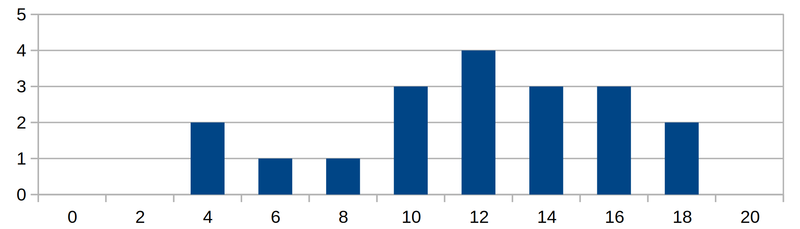

Info
- Kontakt: blazeva1 (na) fit.cvut.cz
- Konzultace: Po domluvě
- Kde mě najdete: NB 341b
- body za aktivitu dostanete za předvedení správného řešení úlohy, nebo odevzdání úkolu z minulého cvika na papíře (každý za 0.5 bodu, max je 5 bodů za semestr)
1. cvičení 23.2.2017
- hodnocení, k-regulární graf s n vrcholy, grafy (normální/acyklické) bez stoků či zdrojů (spousta kombinací), mocniny matice sousednosti, rychlé mocnění
úkoly do příště
- Je pravda, že každý orientovaný graf obsahuje acyklický faktor?
2. cvičení 2.3.2017
- Def. relaci ~ , u~v právě tehdy, když existuje cesta mezi u a v. Dokažte, že ~ je ekvivalence. Dokažte, že ekvivalenční třídy ~ jsou právě komponenty souvislosti grafu G. Jak tato relace funguje u orientovaného grafu?
- Procvičení Havlovy věty
- Každý graf co je 2-souvislý je i hranově 2-souvislý
- Každý 2-souvislý graf obsahuje kružnici
úkoly do přespříště na papíře
-
- (obtížná) Ukažte, že ve 2-souvislém grafu leží akždé dva vrcholy na společné kružnici. (můžete použít indukce dle nejkratší cesty)
-
- S použitím řešení úlohy 1 (předpokládejte, že jste vyřešili) ukažte, že ve 2-souvislém grafu leží každé dvě hrany na společné kružnici.
-
- Mějme DFS co prochází hrany od nejmeních ID vrcholu. Kategorizujte hrany DFS-stromu grafu G={{0,1,2,3,4,5},{(0,1),(0,3),(1,2),(1,3),(2,0),(3,0),(0,4),(4,5),(5,1),(5,3)}}. Jak dopadne kategorizace hran, když je G neorientovaný.
3. cvičení 9.3.2017
- Každý graf sestrojený z kružnice přidáváním uší je 2-souvislý
- Algoritmus hledání mostů a artikulací
- Vrchol v je artikulace <=> všichni jeho sousedi s ním leží na společné kružnici
- Algoritmus pro hledání silně souvislých komponent
- Vlastnosti kondenzace grafu a jak ji najít
- Příklad pro definici ekvivalence dle výsledné kondenzace
úkoly do příště na papíře
- Mějme definovánu ekvivalenci A ~ B <=> kondenzace A a B jsou isomorfní. Najděte třídy ekvivalence pro |V(A)|<=3 |V(B)|<=3 (bylo na cviku), rozřaďte všechny možné neisomorfní orientované grafy do těchto tříd.
4. cvičení 16.3.2017
- spousta cvičení na rozdíl mezi řezy (odděluje zdroj a stok), elementárními řezy (daný přechodem z množiny A do B) a v inkluzi minimálními řezy (nelze odebrat hrana řezu, aby zůstalo řezem)
- nešikovně vysvětlený algoritmus na toky
- zdlouhavé vysvětlování, proč hledáme cestu i proti směru orientovaných hran
- příkládek na toky
- namotivování dělat progtest
úkoly do 6. cvika
- dodělat progtest
5. cvičení 23.3.2017
- zopakování toků
- hranová i vrcholová souvislost je zhora omezená nejmenším stupněm grafu (u vrcholové bacha na kliky)
- hledání grafu, u kterého je h. i v. souvislost menší, než nejmenší stupeň grafu
- všechny vrcholy v inkluzi minimálním vrcholovém řezu vede hrana do každé komponenty souvislosti G’ (G po rozříznutí)
- hrany v inkluzi minimálním hranovém řezu jsou vždy pouze mezi rozpojenými komponentami (které jsou vždy dvě)
- souvislost K_n \ E(C_n) je n-3 pro n >= 5
- algoritmus hledání stupně hranové a vrcholové souvislosti grafu
- po připojení nového vrcholu ke k-souvislému grafu k hranami zůstane graf k-souvislý
úkoly do 6. cvika na papíře
- (0.5b) najděte nejmenší graf takový, že je 3 vrcholově souvislý a existují dva nesousední vrcholy takové, že mezi nimi vedou alespoň 4 disjunktní cesty
- (1b) dokázat, že pro hedání hranové souvislosti nemůsíme pouštět toky mezi všemi dvojcemi vrcholů, ale stačí mezi jedním vybraným vrcholem a všemi ostatními (zryhlení asymptoty o N)
6. cvičení 30.3.2017
- K_n má n-1 disjunktních perfektních párování
- perfektní párování v 3-regulárním grafu obsahuje všechny mosty
- algoritmus pro hledání párování (+ perfektního)
- svišti, díry, orel … a co když neznám čas, potřebný pro záchranu všech svišťů
- pokrytí děravé šachovnice dominem
- pokrytí děravé šachovnice věžmi tak, aby se neohrožovaly (co když se věže přes díry neohrožují)
- povídání a příklad na systém různých reprezentantů a Hallovu větu
- pro n > 3 různých množin A_1 , … , A_n kde |A_i|=n-3, kde sjednoceni všech A_i je X, |X|=n, dokažte, že množiny A_i mají systém různých reprezentantů
- n je přirozené čislo, X je množina s n^2+n+1 prvky, S je systém n+1 prvkových podmnožin X takový, že s,d z S mají velikost průniku max 1. |S|=n^2+n+1. Ukažte, že S má systém různých reprezentantů.
úkoly do 7. cvika na papíře
- Dokažte, že CNF formule, která má v každé klausuli právě n proměnných, a kde každá proměnná je v max n klauzulích je vždy splnitelná.
7. cvičení 6.1.2017
- rovinnost, definice vrcholů, oblouků, stěn (pomocí obloukové relace a jejich ekvivalenčních tříd)
- K_5 a K_{3,3} bez hrany jsou rovinné
- odvození |E| <= 3|V|-6 a pokud nemá trojúhelníky, tak |E| <= 2|V|-4
- každý rovinný graf bez trolúhelníků má vrchol stupně max 3
- rovinnost 3D a 4D hyperkrychle
- obecná eulerova formule |V|-|E|+s=1+k
- zakreslení K_5, K_6, K_7 na toroid
úkoly do 8. cvika na papíře
- dokažte, že rovinný graf G lze do roviny zakreslit bez křížení hran je ekvivalentní s tím, že G lze na sféru zakreslit bez křížení hran
8. cvičení 13.4.2017
- duál grafu - definice, spojitost kostry a kostry duálu
- nezávislost, klikovost a barevnost grafů
- bipartitnost hyperkrychle
- First Fit algoritmus barvení a hledání grafů, ne kterých funguje špatně
úkoly do 9. cvika na papíře
- (0.5b) určete minimální počet vrcholů grafu s minimálním stupněm pět
- (0.5b) vytvořte rovinné zakreslení minimálního grafu, který má minimální stupeň pět
9. cvičení 20.4.2017
- Floyd-Warshal algoritmus pro hledání nejkratších cest mezi všemi vrcholy
- kdy je rychlejší pustit n x Dijkstru
- upravit FW algo, aby hledal nejkratší kružnici, detekoval záporné kružnice, počítal s pravděpodobností, hledal reflexivně-tranzitivní uzávěr
- rychlé hledání nejktratší cesty na stromech
- Fibonacciho haldy - jak funguje, rychlost operací, základní pozorování
úkoly do 10. cvika
- naučit se na test
10. cvičení (zápočtový test)

11. cvičení 4.5.2017 (Pepa)
- zopakování všech operací na fibonačkách na příkladě
- fib. čísla rostou exponenciálně >= 1.6^n
- sekcence operací tvořící fib. stom s hloubkou n
- proč používají fibonačky obousměrný spojový seznam, proč nelze udělat extract min v O(1) a aplikace fibonaček na Dijkstru
- zobecněný vyhledávací strom a (a,b)-strom
- nalezení všech (2,3)-stromů reprezentující množinu {1,2,3,4,5}
- vložte do prázdného (2,3)-stromu prvky: F ; S; Q; K; C; L; H; T ; V ; W ; M ; R; N ; P ; A; B; X; Y ; D; Z; E.
- jak v těchto stromech hledat minimální prvek a následníka
úkoly do 13. cvika na papíře
- (0.5b) jak se mění struktura (2,3)-stromu při vkládání prvků 1,2,…,n ? jaká je jeho hloubka v každém z kroků?
- (1b) jak naimplementujete fci, co ve (2,3)-stromě najde medián v (log n)? popište případné úpravy stromu
12. cvičení (tento čtvrtek je pondělní výuka, odpadá)
13. cvičení
- už jsem zapoměl, co jsme na tomhle cviku brali, ale ke zkoušce stejně musíte umět všechno :]